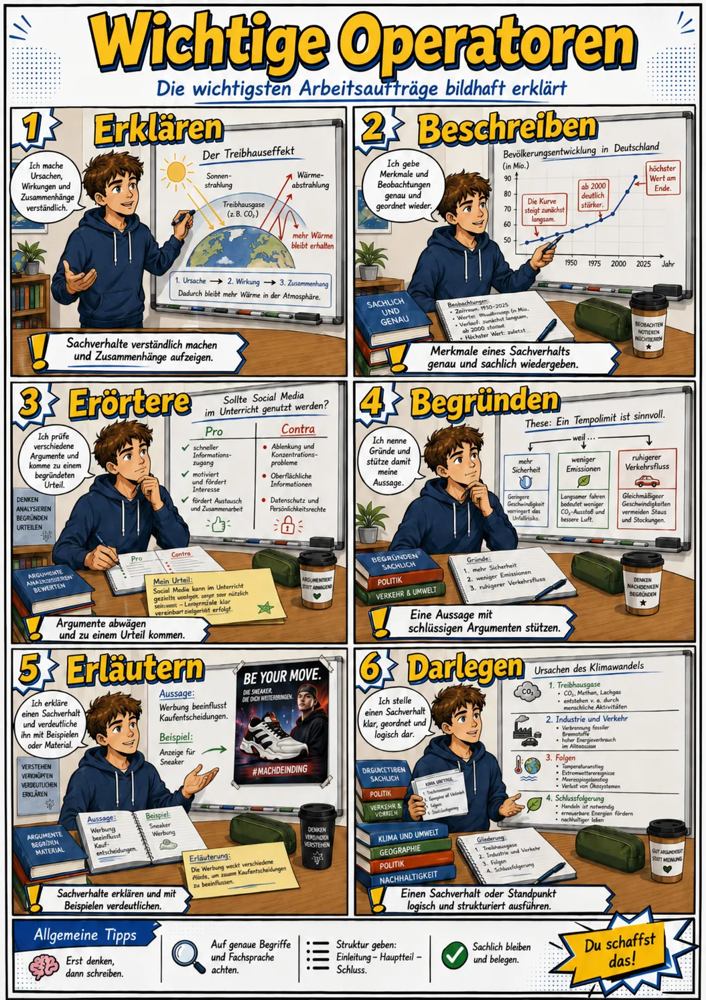

Operatoren-Training
Trainiere jeden Operator in sechs Stufen: Grundlagen, AFB II und eigene Formulierungen.
Was sind Operatoren?
Operatoren sind Arbeitsanweisungen, die festlegen, wie eine Aufgabe bearbeitet werden soll. Sie verdeutlichen, welche Denk- und Schreibleistung erwartet wird. Operatoren wie beschreiben, erklären, analysieren, erläutern oder erörtern verlangen unterschiedlich anspruchsvolle Antworten. Im Deutschunterricht helfen sie beispielsweise dabei, literarische Texte, Sachtexte, Diagramme oder sprachliche Mittel gezielt zu untersuchen. Beim Beschreiben werden erkennbare Merkmale sachlich dargestellt. Eine Analyse untersucht einen Gegenstand genauer und belegt Aussagen am Text. Beim Erörtern werden unterschiedliche Argumente abgewogen, bevor ein begründetes Urteil formuliert wird. Wer die Bedeutung eines Operators kennt, kann seine Antwort passend aufbauen, den erwarteten Umfang einschätzen und Aufgaben präziser bearbeiten.
Teste dein Wissen
15 Aufgaben mit steigendem Schwierigkeitsgrad. Ab 80% gilt die Leistung als gut.
Operatoren und Antwortumfang im Überblick
Nutze beide Darstellungen als Nachschlagehilfe vor und während des Trainings.
